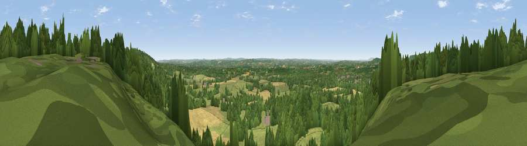

Viewpoint near Limpsfield
#14167 in England · top 7% of its area beats it · near LimpsfieldThe view, rendered

A 360° render of this exact spot computed from the terrain model, tree cover and land cover — summer colours, afternoon light, calibrated against photographs of famous viewpoints. Real trees, hedges and buildings will differ in detail.
The panorama
Grey silhouette: terrain skyline in each direction (720 bearings, Earth curvature and refraction included). Dashed green: skyline with trees (+15 m) and buildings (+8 m) as obstacles. Blue strip: how far the ground is visible on each bearing.
Where the view opens
Wedge length = distance to the farthest visible ground on that bearing (vegetation-aware). Rings at 10, 25 and 50 km.
What fills the view
43% grassland · 42% woodland · 13% cropland · 2% built-up
Angular shares of the visible panorama (visual magnitude), not map area. Landscape diversity 0.46 (0–1 Shannon).
Key numbers
More beautiful places nearby
The staircase of upgrades: each row has a higher view potential than everything closer. Driving times are estimates from straight-line distance, calibrated against real road routing — check an actual route before setting out.
| Place | Direction | Drive | Score |
|---|---|---|---|
| Viewpoint near Crockham Hill | E · 3 km | ~7 min | 60.2 |
| Viewpoint near Limpsfield | NNW · 4 km | ~9 min | 62.7 |
| Viewpoint near Limpsfield | NW · 4 km | ~9 min | 66.0 |
| Viewpoint near Ide Hill | E · 7 km | ~15 min | 67.9 |
| Viewpoint near Caterham Valley | WNW · 9 km | ~18 min | 68.0 |
| Viewpoint near Shipbourne | E · 15 km | ~27 min | 69.1 |
| Box Hill | W · 21 km | ~36 min | 70.4 |
| Viewpoint near Box Hill Village | W · 22 km | ~36 min | 71.0 |
51.24571, 0.03129 · source: screening · position refined by local search. Computed location — check access rights before visiting.